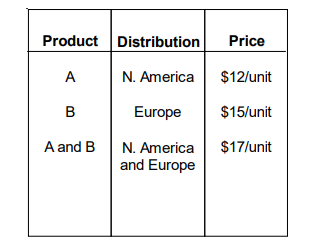
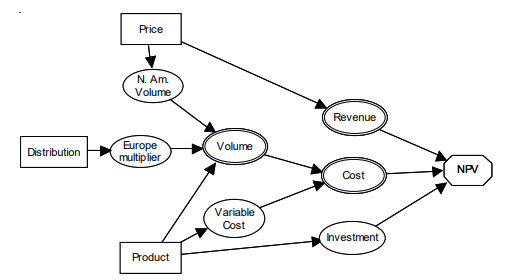

Bab 14 Decision Tree Analysis
14.1 Pendahuluan
Analisis keputusan atau Decision Analysis(DA) secara sederhana didefinisikan sebagai sebuah proses dalam pemilihan alternatif yang paling sesuai dengan tujuan yang telah ditetapkan. Didalam literatur, Analisis keputusan dijelaskan sebagai sebuah prosedur yang sistematis dalam men-trasformasikan masalah-masalah pengambilan keputusan yang masih belum jelas menjadi sebuah keputusan yang lebih jelas dengan urutan langkah yang transparan.
Penggunaan analisis keputusan dalam penilaian kelayakan proyek memberikan gambaran yang lebih baik terhadap opportunity yang dimiliki, mengevaluasi potensi risiko, memberikan gambaran Informasi apa saja yang diperlukan dan menilai kesiapan untuk melakukan pekerjaan tersebut. Dalam konteks pengambilan keputusan, decision analysis sebaiknya dilihat sebagai sebuah komunikasi antara pengambil keputusan dengan decision facilitator yang bertujuan memberikan insight, sehingga hasil dari analisis keputusan diharapkan memberikan gambaran terbaik terhadap opsi yang dimiliki.
Adanya faktor uncertainty baik yang disertakan maupun diluar dari batasannya, memungkinkan bahwa hasil terbaik dari decision analysis bisa jadi tidak linier terhadap kesuksesan proyek. Untuk mengurangi akibat dari ketidakakuratan hasil analisis, diperlukan proses analisis keputusan secara bertahap dengan perubahan informasi baru yang dimiliki seiring perjalanan proyek.
Analisis Pohon Keputusan atau Decision Tree Analysis (DTA) merupakan salah satu metode yang paling sering digunakan dalam proses pengambilan keputusan, implementasi penggunaan metode ini dalam teknik perminyakan sejauh ini sering ditujukan pada tahap eksplorasi (Bratvold and Begg 2010).
Modul Decision Analyis PertaEOR menggunakan metode DTA dalam melakukan evalusi sebuah proyek. Modul ini didesain secara khusus untuk proyek-proyek EOR. Workflow pada modul DTA untuk PertaEOR telah diintegrasikan dengan modul lainnya yang telah ada, seperti: Modul screening, Modul predictive model, Modul keekonomian dan modul analisis monte carlo.
Istilah Decision Facilitator adalah untuk memberikan cakupan yang lebih luas dari individu-individu yang harus terlibat dalam proses pendefinisian pengambilan keputusan. (McNamee and Celona 2001)
14.2 Stuktur Analisis Pohon Keputusan (Decision Tree Analysis)
Analisis pohon keputusan atau Decision Tree Analysis (DTA) merupakan salah satu metode pengambilan keputusan yang menggunakan tree-model dalam memvisualisasikan opsi dan kemungkinan yang berpotensi terjadi. DTA secara terstruktur akan memetakan opsi-opsi dan kemungkinan dari sebuah kejadian menjadi sebuah cabang-cabang pohon (tree brach). Proses perhitungan di tree brach sangat bergantung dari tree node yang di pilih, dua jenis tree node yang digunakan pada DTA adalah option node dan uncertainty node. Option node adalah titik yang akan memberikan cabang berupa opsi yang bisa di pilih dan disertakan, sedangkan uncertainty node adalah titik yang menggambarkan variabel uncertainty dalam sebuah kejadian. Selanjutnya uncertainty akan direpresentasikan dalam sebuah nilai probabilitas, hal ini akan lebih detil dijelaskan pada seksi 14.5.1 dan seksi 14.5.2.
Gambar 14.1: Decision Tree Analysis
Gambar [ref] merupakan sebuah contoh perumusan masalah pada DTA, bagian utama dari struktur tree akan dijelaskan lebih detil pada seksi 14.2.2. Perumusan bagian-bagian yang terkait dengan cabang-cabang yang akan disertakan merupakan hasil dari proses diskusi antara pengambil keputusan dengan decision facilitator. Beberapa hal yang perlu disimpulkan sebelum mebangun sebuah tree adalah pendefinisian: Objective function, alternatif / skenario, dan variabel-variabel yang berkaitan dengan biaya dan ekspektasi yang akan didapatkan. Hal ini akan dijelaskan lebih detil pada seksi 14.4.2.
14.2.1 Elemen Analisis Pohon Keputusan
Elemen decision analysis merupakan variabel yang perlu dijelaskan sebelum melakukan evaluasi, variabel tersebut harus dipahami dengan baik oleh pengambil keputusan dan decision facilitator. Menurut (Bratvold and Begg 2010), ada lima elemen utama pada proses studi pengambilan keputusan yaitu:
- Alternatives
- Objectives
- Information
- Payoff
- Decision
Tiga elemen teratas sering disebut “decision basis” (Howard 1988).
14.2.1.1 Alternatives
Alternatif didefinisikan sebagai sebuah pilihan (choices) yang dimiliki sebelum proses pengambilan keputusan, tidak ada keputusan yang diambil jika tidak memiliki opsi (Bratvold and Begg 2010). Proses pendefinisian alternatif membutuhkan komunikasi antara decision facilitator yang terlibat. Penilaian terhadap sebuah proses pengambilan keputusan apakah sudah menyertakan seluruh opsi yang dimiliki atau belum akan dilakukan pada seksi 14.4.4.2.2.
14.2.1.2 Objectives
Tujuan yang jelas dan dapat dicapai perlu untuk ditetapkan sebelum memulai proses pengambilan keputusan.
14.2.1.3 Information
14.2.1.4 Payoff
14.2.1.5 Decision
14.2.2 Notasi Baku Analisis Pohon Keputusan
Gambar 14.2: Decision Tree Analysis
-Notasi Node -Notasi Tree -Notasi Diagram
14.3 Alur Kerja Pengambilan Keputusan
14.4 Decision Tree Analysis Workflow
Gambar 14.3: Decision Tree Analysis
14.4.1 Framing The Problem
Gambar 14.4: Decision Tree Analysis
Framing adalah memastikan bahwa terdapat orang-orang yang tepat untuk mengatasi suatu masalah dengan perspektif yang tepat. Terdapat tiga dimensi kunci dalam melakukan framing dengan tepat: tujuan, cakupan, dan perspektif. Ketika tim memulai pekerjaan dalam suatu keputusan, pada beberapa kesempatan terdapat beberapa anggota yang tidak setuju dengan apa yang dilakukan. Tujuan yang jelas harus ditetapkan dan disetujui sebelum tim memulai pekerjaan. Dimensi cakupan dalam framing biasanya mudah dilakukan dan dipahami. Cakupan bertujuan untuk menetapkan batasan masalah, jenis-jenis solusi, sumber informasi yang akan membantu dalam penentuan solusi, dan kriteria yang akan digunakan pada pilihan.
Dimensi perspektif pada framing lebih sulit untuk dideskripsikan. Kita memiliki metode dalam menghadapi berbagai informasi yang kita terima. Analoginya bahwa setiap orang sudah memiliki saringan tersendiri: beberapa informasi diklasifikasikan tidak relevan dan tidak digunakan dari awal proses pembentukan persepsi. Analogi lain adalah suatu bingkai gambar: kita menaruh bingkai di sekeliling masalah, mengeluarkan beberapa hal pada gambar dan memasukkan beberapa hal ke dalamnya. Ketika masalah lintas displin terjadi, penyaringan masalah perlu direvisi dan frame perlu diluaskan. Tidak mungkin tim dapat berpikir strategis atau dapat mengimplementasikan, kecuali jika seluruh anggota memiliki frame yang sama. Kesuksesan dalam framing telah terbukti sangat krusial dalam menentukan kualitas keputusan. Proses-proses utama dan produk-produk pada proses framing adalah sebagi berikut:
- Issue Raising: Kegiatan ini memiliki tiga tujuan: memunculkan materi yang akan dibahas sebanyak mungkin, menyoroti frame antar sesama anggota tim, dan mengembangkan rasa kepemilikan tim terhadap keputusan yang akan diselesaikan.
- Project Vision Statement: Dilakukan dengan menjawab empat pertanyaan mendasar: Apa yang akan kita lakukan? Kenapa kita melakukan ini? Bagaimana kita tahu bahwa kita akan berhasil? Bagaimana jika gagal?
- Decision Hierarchy: Merupakan tools yang digunakan untuk menjabarkan rangkaian keputusan yang kompleks seperti gambar di bawah ini.

Gambar 14.5: Strategy Table
- Influence Diagram: Merupakan tools yang dihunakan untuk melacak keputusan, ketidakpastian, dan keterhubungan di antara keduanya. Influence diagram sangat penting untuk mengembangkan pemahaman tim proyek terhadap masalah dan dalam mengatur pekerjaan.

Gambar 14.6: Influence Diagram
- Decision Criterion: Sebelum keputusan dibuat, kriteria keputusan harus ditetapkan dan disetujui bersama. Kriteria terpenting dalam pengambilan keputusan biasanya adalah NPV.
14.4.2 Deterministic Analysis
Gambar 14.7: Decision Tree Analysis
Deterministic analysis digunakan untuk mengevaluasi keekonomian model dari setiap strategi yang telah didapat dari proses framing. Penilaian kecenderungan variabilitas dilakukan untuk setiap parameter untuk mengetahui parameter mana yang memiliki pengaruh besar terhadap keekonomian. Proses ini dilakukan dengan menggunakan Tornado Chart arau Spider Chart dengan melakukan variasi: nilai low, base, dan high untuk setiap parameternya.
14.4.3 Probabilistic Analysis
Gambar 14.8: Decision Tree Analysis
Bilamana deterministic analysis berfokus untuk mengkuantifikasi pengaruh setiap parameter terhadap keekonomian proyek maka dalam probabilistic analysis, seluruh parameter divariasikan secara bersamaan dan pengaruh parameter ketidakpastian yang dikombinasikan dalam proyek dikuantifikasikan sebagai economic value dengan probabilitas terkait yang terjadi. Expected Value (EV) dan probabilitas hasil rata-rata beban juga dihitung. Model probabilistik dibangun dari decision tree analysis. Parameter-parameter yang mendominasi dalam Tornado Chart digunakan untuk membangun decision tree. Decision tree digunakan untuk mengevaluasi seluruh kombinasi kemungkinan hasil yang mungkin terjadi dengan setiap probabilitasnya dan NPV untuk setiap opsi pengembangan. Hasil dari decision tree analysis digambarkan dalam bentuk Cummulative Distribution Function atau Expectation Curve dengan NPV berada di sumbu x dan probabilitas kumulatifnya berada di sumbu y.
14.4.4 Appraisal
14.4.4.1 Value of Information
Kebanyakan kegiatan yang petroleum engineer dan geoscientist lakukan, melibatkan kegiatan memperoleh informasi dari satu kegiatan lain ke yang lain. Istilah “informasi” di sini bermakna luas yang mencakup pengambilan data, melakukan studi teknis, menyewa konsultan, melakukan tes diagnostik, dan seterusnya. Harapannya adalah bahwa mengurangi ketidakpastian meningkatkan kesempatan untuk mendapatkan hasil yang diinginkan. Namun nyatanya, alasan satu-satunya dilakukan kegiatan pengumpulan informasi atau analisis teknis adalah untuk memenuhi persyaratan peraturan. Pertanyaan mendasar untuk proses mendapatkan informasi adalah apakah pengurangan ketidakpastian itu sebanding dengan biaya untuk mendapatkan informasi. Value of Information (VoI) dirancang untuk menjawab pertanyaan tersebut.
Tujuan dari perhitungan VoI, yakni untuk mengestimasi nilai dari kegiatan pengumpulan informasi sehingga suatu keputusan akan diimplementasikan atau tidaknya dibuat berdasarkan basis ekonomi. Agar informasi memiliki nilai, maka perlu adanya perhitungan probabilistik antara informasi dan hasil dari suatu kejadian ketidakpastian. Dalam perhitungan VoI diperlukan beberapa informasi sebagai berikut:
- Prior probability, estimasi probabilitas dari kemungkinan hasil yang dapat diambil kuantitasnya (misalnya terdapat peluang 30% recovery factor rendah dan peluang 70% recovery factor tinggi).
- Reliaility(likelihood), estimasi probabilitias efisiensi suatu informasi dalam memprediksi hasil (misalnya saat recovery factor diketahui tinggi, studi simulasi reservoir 3D mengindikasikan dengan benar sebesar 80%).
- Nilai moneter proyek untuk setiap kombinasi hasil yang memungkinkan (contohnya NPV 600 USD jika recovery factor tinggi dan NPV 100 USD jika rendah).
Dalam menghitung VoI, perhitungan biasanya dilakukan dengan menggunakan decision tree. Terdapat dua decision tree yang dihitung, yaitu nilai proyek dengan estimasi probabilitas yang ada dan perkiraan nilai projek baru dengan probabilitas yang diperbarui setelah adanya kegiatan memperoleh informasi. Perbedaan kedua nilai tersebut disebut sebagi expected VoI. Nilai expected VoI terbagi menjadi dua, yaitu:
- EVPI (Expected Value of Perfect Information), nilai tersebut diperoleh ketika suatu kegiatan mampu memperoleh hasil informasi dengan tingkat akurasi 100%.
- EVII (Expected Value of Imperfect Information), adapun terdapat kondisi dimana informasi yang didapat tidaklah selalu dapat memberikan kepastian (tingkat akurasi di abwah 100%).
Pada dua nilai tersebut, EVPI merupakan batas atas nilai suatu informasi. Di sisi lain bisa jadi kegiatan pengambilan informasi ini tidak mengakibatkan adanya perubahan probilitas. Expected value ini dapat dijadikan acuan decision maker untuk membuat keputusan apakah akan melakukan kegiatan untuk memperoleh informasi atau tidak. Ketika nilai expected value berada di bawah biaya untuk memperoleh informasi maka jawabannya jelas, yaitu tidak perlu diproses. Namun, ketika expected value nilainya ada di ata biaya untuk memperoleh informasi maka decision maker dapat mempertimbangkannya. Terdapat beberapa langkah dalam menghitung VoI sebagai berikut:
- Menghitung expected value suatu keputusan yang akan dibuat pada kondisi belum terdapat informasi atau bisa disebut dengan istilah base project.
- Mengformulasi struktur decision tree untuk memasukkan informasi baru. Dimulai dengan menambahkan branch baru pada node pertama pada decision tree untuk merepresentasikan pilihan untuk memperoleh informasi. Branch ini harus mengarah pada uncertainty node, yaitu event ketidakpastian yang menjadi hasil dari kegiatan memperoleh informasi. Setiap hasil yangn memungkinkan dari event untuk memperoleh informasi ditambahkan tree yang merepresestasikan base project.
- Menghitung EVPI.
- Menghitung EVII, langkah ini memiliki beberapa turunan, yaitu:
- Mengestimasi probabilitas reliability (likelihood), P(info says | real world is )
- Menghitung probabilitas updated (posterior)
- Memasukkan posterior pada decision tree
- Menghitung nilai proyek
- Menghitung EVII dengan nilai probabilitas reliability (likelihood) yang berbeda-beda.
Gambar 14.9: Decision Tree Analysis
14.4.4.2 Decision Quality
Terdapat suatu perbedaan definisi yang mendasar antara keputusan dan hasil. Hasil yang baik adalah apa yang kita inginkan sedangkan keputusan yang baik adalah apa yang dapat dilakukan untuk memaksimalkan kemungkinan hasil yang baik. Keputusan yang baik tidak menjamin hasil yang baik tapi pada umumnya keputusan yang baik akan mengarah pada hasil yang baik sehingga dari definisi ini maka yang dapat dilakukan adalah membuat keputusan yang baik, bukan hasil yang baik. Bagi decision-maker tunggal, biasanya penentuan apakah keputusan itu “baik” dapat dilakukan dengan jelas. Di sisi lain, jika berada dalam suatu lingkungan yang terdiri dari beberapa decision-maker, maka penentuan organisasi itu siap mengambil keputusan menjadi cukup sulit. Dalam kondisi tersebut, perlu ada persetujuaan mengenai kualitas dari alternatif, informasi, dan value. Decision Quality di sini berperan sebagai alat yang berfungsi untuk mengevaluasi kualitas dari keputusan.
Setelah mencapi tahap pendeklarasian keputusan, perlu dipastikan bahwa proses menentukan keputusan tersebut sudah mencapai keputusan yang berkualitas yang dilakukan dengan mengevaluasi keputusan tersebut berdasarkan 6 elemen Decision Quality. Matheson dan Matheson (1998) mensurvei sejumlah besar decison-maker dan menggabungan tanggapan mereka dengan pemikiran akademisi untuk mengembangkan kerangka kerja yang mengevaluasi kualitas dari keputusan dalam 6 dimensi seperti Gambar di bawah ini.
Gambar 14.10: Elemen Decision Quality
Elemen-elemen tersebut direpresentasikan dalam sebagai hubungan dalam rantai keputusan akan hanya sekuat mata rantai yang paling lemah. Jika setiap elemen kuat, maka kualitas keputusan adalah tinggi. Jika salah satu elemen lemah, maka kualitas keputusan tidak lebih baik dari elemen yang lemah tersebut. Setiap elemen harus dipertimbangkan berdasarkan perspektif kepala dan hati karena keputusan harus masuk akal dan terasa benar. Setiap dari 6 elemen tersebut harus mencapai kualitas terbaiknya: helpful frame, creative alternatives, useful information, clear values, sound reasoning, dan commitment to follow through.
14.4.4.2.1 1. Helpful Frame
Titik awal adalah mengidentifikasi keputusan yang akan dibuat secara jelas dan seberapa akurat keputusan itu untuk dinilai. Helpful frame memperjelas situasi yang akan dipecahkan. Langkah pada tahap ini sangat penting. Mendapat pertanyaan yang baik dari kerangka masalah yang buruk adalah tidak berguna. Sebagai engineer dan geoscientists, mereka cenderung untuk segera menghasilkan model (sebagai contoh, tools simulasi, spreadsheets, model dan analisi geologi, dan lain-lain) saat menghadapi situasi keputusan yang baru. Decision-maker yang sudah ahli, bagaimanapun, mengetahui bahwa mereka harus mengidentifikasi secara sadar apa uang harus diputuskan. Terlalu sering terdesak waktu dan membutuhkan jawaban yang segera, decision-maker yang belum berpengalaman terjun ke dalam untuk mengumpulkan informasi atau membangun model kuantitatif tanpa berhenti untuk mengajukan pertanyaan-pertanyaan sebagai berikut ini:
- Apa yang diputuskan?
- Apa yang tidak diputuskan?
- Apa yang akan didapat dari yang diberi?
- Apakah asumsi-asumsi sudah ditentukan secara jelas?
Terlepas dari seberapa sedikit waktu yang tersedia, seseorag tidak boleh melewatkan menanyakan pertanyaan-pertanyaan framing-type. Jika tidak bertanya dengan baik, maka memungkinkan akan lebih banyak waktu yang terbuang daripada “menghemat” karena mengambil risiko memecahkan masalah yang salah.
14.4.4.2.2 2. Creative Alternatives
Kurangnya tingkat kreativitas dan fleksibilitas alternatif adalah salah satu alasan utama perusahaan-perusahaan memiliki kesulitan dalam mencapai keputusan yang berkualitas tinggi. Bagian ini dapat diilustrasikan dengan menanyakan pertanyaan-pertanyaan sebagai berikut ini:
- Apa saja pilihan-pilihan kita?
- Apakah alternatif-alternatif tersebut dapat dilakukan?
- Apakah alternatif tersebut memecahkan masalah?
- Apakah berbagai alternatif lain sudah dipertimbangkan?
Bagian ini membutuhkan suatu tim untuk menggali ide-ide dan menjadi kreatif. Setiap alternatif yang telah diindetifikasi harus konsisten secara logika dan bisa dilakukan. Kualitas setiap keputusan hanya bisa sebaik alternatifnya yang telah diidentifikasi, jika tidak ada alternatif maka tidak ada keputusan.
14.4.4.2.3 3. Useful Information
Bagian ini menjelaskan kebutuhan untuk menggunakan informasi yang terpercaya dan relevan yang berkaitan dengan penentuan keputusan. Hal tersebut dapat diilustrasikan dengan menanyakan pertanyaan-pertanyaan di bawah ini:
- Apa yang kita ketahui?
- Apakah kita memiliki informasi yang penting?
- Apakah informasi tersebut tidak bias?
- Seberapa akurat kita di masa lalu dengan penilaian serupa?
- Informasi apa dikumpulkan dengan adanya lebih banyak waktu/uang/sumber daya?
Perusahaan-perusahaan dan individu-individu seringkali baik dalam memasukkan apa yang mereka tahu dalam analisis. Namun, keenderungan yang sangat berbahaya diilustrasikan dengan tepat sebagai berikut: “Bukan banyaknya hal yang tidak kita ketahui yang membuat kita dalam masalah. Namun, hal-hal yang kita ketahui tidak seperti itu seharusnya”. Kunci dari kualitas bagian ini adalah informasi mengenai apa yang belum diketahui (yaitu, keterbatasan pengetahuan). Terlalu banyak keputusan yang dibuat berdasarkan kesalahan atau kekurangan informasi. Penentuan kebutuhan informasi dan mengumpulan informasi yang bermanfaat secara sadar sebelum eksekusi merupakan hal yang sangat penting dilakukan untuk membuat keputusan yang baik.
14.4.4.2.4 4. Clear Values
Seperti yang telah dibahas sebelumnya, komponen yang sangat penting untuk memebuat keputusan yang baik adalah mendefinisikan dan mengartikulasikan dengan jelas kriteria untuk mengukur value dari alternatif-alternatif dan bagaimana perusahaan membuat tradeoffs pada setiap alternatif. Untuk kebanyakan perusahaan-perusahaan E&P, kriteria kuncinya adalah beberapa dari kombinasi NPV, cash flow, produksi, dan penggantian reserves. Pertanyaan-pertanyaan yang dapat ditanyakan adalah sebagai berikut:
- Konsekuensi-konsekuensi apa saja yang perlu diperhatikan?
- Tradeoff apa saja yang dihasilkan?
- Apakah kita bisa mengukur value secara akurat di masa lalu?
Tradeoff seringkali dibutuhkan, dan kejelasan mengenai bagaimana kriteria dirankingkan juga sangat penting. Value metric yang biasa digunakan pada E&P adalah pengurangan uncertainty atau peningkatan kepercayaan. Seperti yang telah dibahas sebelumnya, metric-metric ini tidak memiliki nilai ekonomi. Bahaya lain adalah mengabaikan metric keputusan yang intangible, seperti reputasi atau keamanan perusahaan.
14.4.4.2.5 5. Sound Reasoning
Reasoning adalah bagaimana kita mengkombinasikan alternatif, informasi, dan value agar menjadi keputusan. Itu adalah jawaban kita atas pertanyaan: “Kami memilih alternif ini karena …..” Bagian ini membutuhkan penggabungan input dari bagian-bagian sebelumnya untuk menentukan alternatif manakah yang menghasilkan value terbanyak. Pada kebanyakan kasus, situasi keputusan cukup kompleks untuk memercayakan pada intuisi dan membutuhkan model. Bagian ini dapt diilustrasikan dengan menanyakan pertanyaan: “Apakah saya berpikir jernih tentang ini?”
Pada industri E&P tidak terbiasa untuk mengembangkan model yang terlalu rumit untuk menyampaikan kejelasan dan transparansi yang dibutuhkan. Prosedur biasa dalam pengembangan “base case” terkadang menghasilkan determinisktik model yang terlalu detail dan kompleks yang mengabaikan tidak hanya uncertainties tetapi juga variabel-variabel kunci.
Tujuan dari evaluasi adalah untuk mengembangkan rekomendasi yang jelas, transparan, dan mudah dimengerti. Rekomendasi yang mampu memaksimalkan value dari decision-maker.
14.4.4.2.6 6. Commitment to Follow Through
Bagian ini menggerakkan keputusan ke tahap implementasi, yang mana tidak trivial. Keputusan terbaik tidak berguna jika organisasi tidak mengimplementasikannya. Jika komitmen yang dimilki hanya setengah hati, maka pelaksanaanya biasanya kurang intens dan mungkin tidak mencapai hasil yang terbaik. Bagian ini dapat diilustrasikan dengan menanyakan beberapa pertanyaan:
- Apakah rekomendasi sesuai dan bisa dilakukan?
- Bagaimana kita akan mengkomunikasikan keputusan?
- Apakah organisasi bisa mendukung keputusan tersebut?
- Apakah sudah terdapat rencana implementasi?
Pelaksanaan yang sukses membutuhkan sumber daya, seperti waktu, usaha, uang, atau bantuan dari pihak lain. Selain itu pula juga membutuhkan kesiapan untuk mengatasi permasalahan. Berikut ini adalah beberapa contoh pertanyaan yang ada dalam modul Decision Quality.
| Question | Kategori | |
|---|---|---|
| 1 | apakah sudah tersedia analisa HSSE dan amdal? | Commitment to Follow Through |
| 2 | apakah sudah dilaksanakan evaluasi keekonomian? (IRR > 10%) | Commitment to Follow Through |
| 3 | apakah sudah memiliki pattern design? | Commitment to Follow Through |
| 4 | apakah telah membuat program monitoring dan surveillance? | Commitment to Follow Through |
| 5 | bagaimana kondisi operasional saat ini (kondisi sumur, fasilitas produksi, dan sumber media EOR? | Commitment to Follow Through |
| 6 | apakah project telah mendapat persetujuan dari pihak-pihak terkait? (Mulai dari pengadaan barang sampai monitoring dan surveillance) | Commitment to Follow Through |
| 7 | apakah terdapat dana yang teralokasi khusus unutuk kegiatan EOR? | Commitment to Follow Through |
| 8 | apakah ada sumber daya manusia yang capable dibidang EOR? | Commitment to Follow Through |
| 9 | apakah sudah melalui uji laboratorium yang baik? (IRF > 10%) | Commitment to Follow Through |
| 10 | apakah baseline sudah dibuat dan disepekati semua pihak? | Commitment to Follow Through |
| 11 | apakah sudah memiliki program abandomant and site restoration? | Commitment to Follow Through |
| 12 | apakah sudah membuat project schedule? | Commitment to Follow Through |
| 13 | apakah sudah memiliki model GGRPF? | Commitment to Follow Through |
| 14 | apakah sudah membuat forecast produksi? | Commitment to Follow Through |
| 15 | Apakah jelas latar belakang, isi dan tujuan usulan? | Helpful Frame |
| 16 | Seberapa besar pengetahuan dari stakeholder terhadap usulan? | Helpful Frame |
| 17 | Seberapa besar prioritas dari usulan? | Clear Value |
| 18 | Seberapa besar pengaruh ke anggaran dari usulan? | Clear Value |
| 19 | Apakah ada kemungkinan alternative lain dari usulan? | Creative Alternatives |
| 20 | Apakah dari usulan ada opsi yang bias dikurangi/efisien? | Creative Alternatives |
| 21 | Apakah usulan Realistik dan bias dilaksanakan sesuai waktu? | Creative Alternatives |
| 22 | Bila usulan diterima, apa yang bias didapat untuk menguntungkan PTM? | Clear Value |
| 23 | Seberapa lengkap dari usulan yang harus disampaikan? | Useful Information |
| 24 | Seberapa yakin dari sumber informasi/teknologi usulan? | Useful Information |
| 25 | Seberapa jelas usulan dari kebutuhan dan fakta kegunaannya? | Clear Value |
| 26 | Seberapa jauh dapat diindentifikasi dan diklarifikasi kriteria usulan yang paling penting? | Clear Value |
| 27 | Seberapa baik kriteria usulan dalam prioritas yang mencerminkan Keuntungan internal PTM? | Clear Value |
| 28 | Seberapa komprehensif kriteria untuk mengukur kesuksesan dalam tujuan proyek dan keuntungan PTM? | Clear Value |
| 29 | Seberapa lengkap dan komprehensif dari riset, logic dan temuan dari usulan? | Sound Reasoning |
| 30 | Seberapa jelas dapat dijelaskan dari pilihan opsi dari opsi usulan yang diusulkan? | Sound Reasoning |
| 31 | Seberapa lengkap dari organisasi yang mengevaluasi usulan ini? | Commitment to Follow Through |
| 32 | Seberapa yakin hasil yang didapat dari usulan? | Commitment to Follow Through |
| 33 | Apakah PTM siap dari sisi resource untuk melaksanakan usulan ini? | Commitment to Follow Through |
| 34 | Seberapa jauh PTM terlewatkan dari substantive analisis yang berpengaruh terhadap kualitas usulan? | Clear Value |
| NA | NA | NA |
14.5 Pemetaan Ketidakpastian
14.5.1 Apa itu Uncertainty
14.5.2 Uncertainty & Probability
Gambar 14.11: Decision Tree Analysis